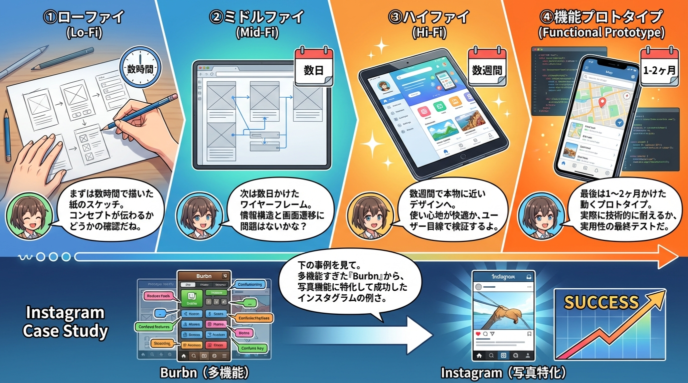
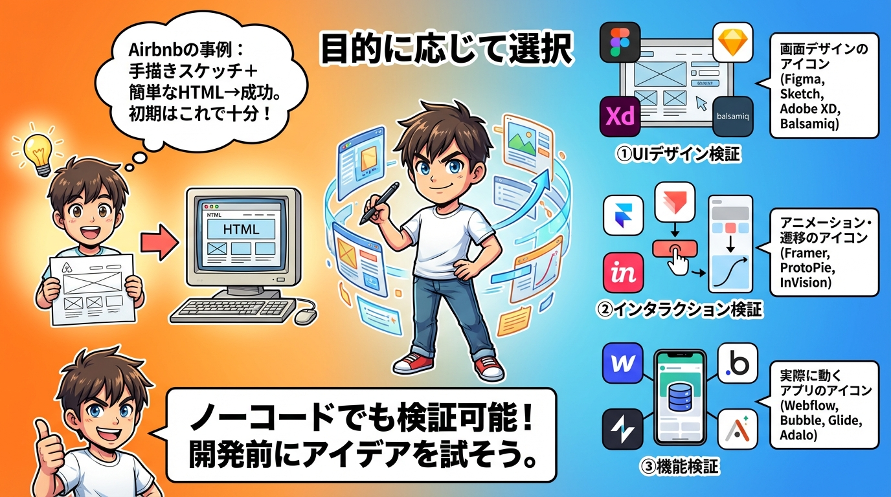
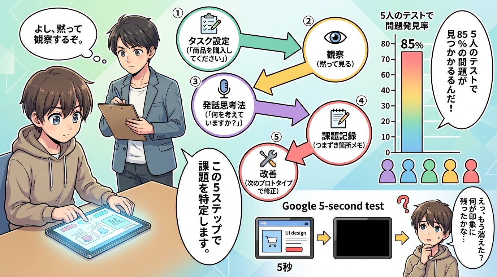
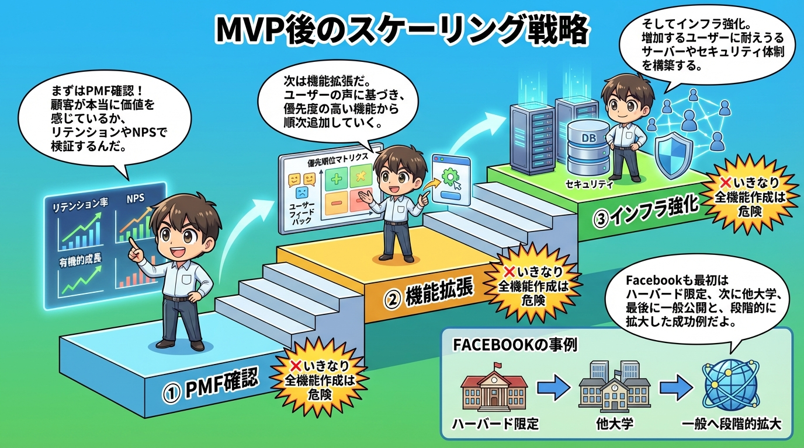
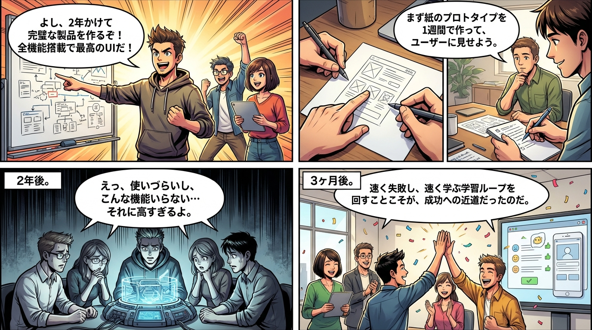

第1章：段階的進化
ローファイからハイファイまでの4段階プロトタイプ。各段階のコストと学び、検証すべき問いを視覚化。Instagramの原点Burbnから写真特化への転換事例。
第2章：MVPの本質
最小限の機能で高品質を実現するMVP。Kanoモデルによる機能分類（当たり前・一元的・魅力的品質）。Twitterの138文字MVP事例。

第3章：BMLループ
リーンスタートアップの核心サイクル。学習速度が競争優位を生む仕組み。3種類のピボット判断基準。Slackのゲーム開発からの転換事例。

第4章：ツール選択
UIデザイン・インタラクション・機能検証の3カテゴリ別ツール選択。ノーコードツールでの検証方法。Airbnbの手描きスケッチ事例。

第5章：ユーザビリティテスト
5ステップの効果的なテスト手法。5人で85%の問題発見。発話思考法と観察技術。Googleの5秒テスト事例。

第6章：スケーリング戦略
PMF確認→機能拡張→インフラ強化の3段階スケーリング。リテンション率・NPS・有機的成長の判断指標。Facebookの段階的拡大事例。
📚 4コマ漫画で理解する
完璧な製品を2年かけて作ったが失敗した企業と、紙のプロトタイプから始めてBuild-Measure-Learnループを高速で回し、3ヶ月で成功した企業の対比。速く失敗し、速く学ぶことが成功への道でした。